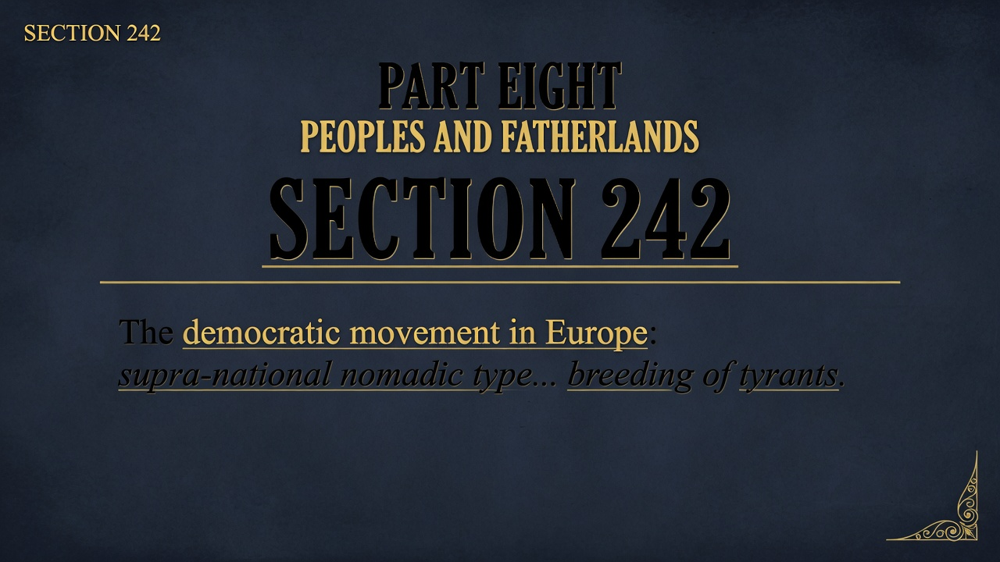

FRIEDRICH NIETZSCHE • 1886 • PART EIGHT
Section 249
Every People Has Its Own Tartuffery
Identifier: 249
Simple modern summary
Every culture has its own hypocrisy—its real strengths are usually not the virtues it loudly advertises. National self-congratulation about "values" often masks what's actually going on. Look for the unadvertised excellences instead of the official story.
EXTENSIVE SUMMARY (Faithful to Text)
“Every people has its own Tartuffery and calls it its virtues. The best that one is one does not know—one cannot know.”
A brief, cutting observation. Nations (and individuals) practice a pious hypocrisy they name virtue, and their highest quality remains unconscious to them.
Key Insight: Self-knowledge is limited; the national or personal "best" is often precisely what is not paraded as virtue.
BGE connection: Sharpens the critique of "our virtues" into collective self-deception. Prepares the gratitude and suspicion toward the Jews in 250.
Modern companion insight: 2026 national self-congratulation on "values" often masks the real strengths (or vices). The free spirit suspects the loudly named virtues and looks for the unadvertised excellences.
A brief, cutting observation. Nations (and individuals) practice a pious hypocrisy they name virtue, and their highest quality remains unconscious to them.
Key Insight: Self-knowledge is limited; the national or personal "best" is often precisely what is not paraded as virtue.
BGE connection: Sharpens the critique of "our virtues" into collective self-deception. Prepares the gratitude and suspicion toward the Jews in 250.
Modern companion insight: 2026 national self-congratulation on "values" often masks the real strengths (or vices). The free spirit suspects the loudly named virtues and looks for the unadvertised excellences.
Validation: Direct quote and concise analysis of Tartuffery as named virtue in §249. ~180 words.
PRESENTATION SLIDES
Visual Slides
Dark Academia • Minimalist Keynote Style • 3 Slides
1. Title + Key Quote
SLIDE 1/3

Every people has its own Tartuffery and calls it its virtues.
2. Core Insight
SLIDE 2/3

The best that one is remains unknown even to oneself. Loudly named virtues are often the mask.
3. Implications
SLIDE 3/3

Suspect the publicly celebrated national virtues. Look instead for the unadvertised, unconscious excellences.
Self-contained HTML • Tailwind CDN • Part Eight (Peoples and Fatherlands). Accurate modern companion to Kaufmann translation.